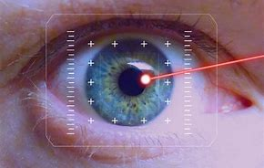
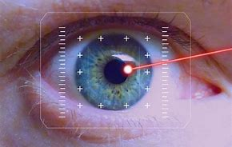
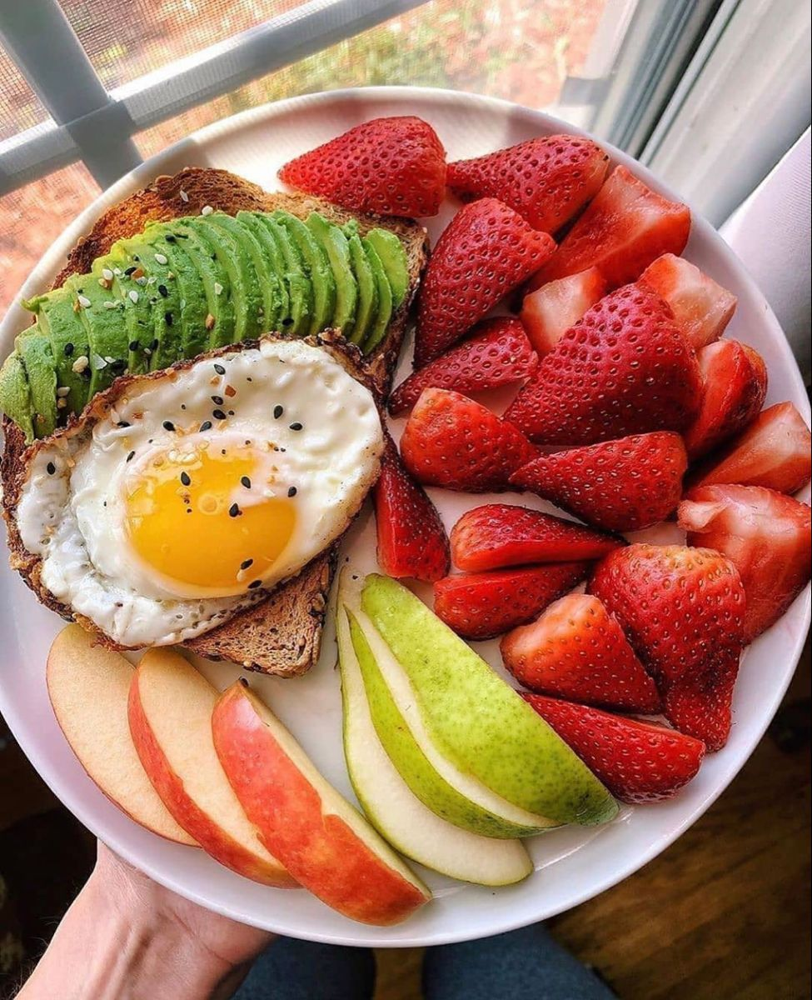
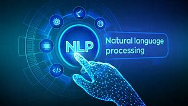

Developed a state-of-the-art deep learning model using TensorFlow to predict credit default risk, achieving an impressive 82% accuracy on test data. This project showcases the robustness and efficacy of deep learning techniques in financial analytics.
 

Developed an innovative computer vision model to detect glaucoma from retinal images, utilizing convolutional neural networks (CNNs) to achieve high accuracy in early diagnosis, aiding in the prevention of vision loss.

Developed a cutting-edge Calories Detection App using Gemini Vision Pro API, leveraging advanced image recognition and Generative AI techniques to accurately estimate the calorie content of various foods from photos, promoting healthier eating habits.
Developed a Medical Chatbot using LLAMA2 and LangChain, designed to provide accurate and reliable medical information to users. This project leverages advanced natural language processing techniques and LangChain for improved conversational capabilities, ensuring effective and context-aware responses to medical queries.

Developed a comprehensive tutorial on Natural Language Processing (NLP) using Recurrent Neural Networks (RNNs), demonstrating techniques for text generation, sentiment analysis, and sequence prediction. This project showcases the application of RNNs in various NLP tasks.